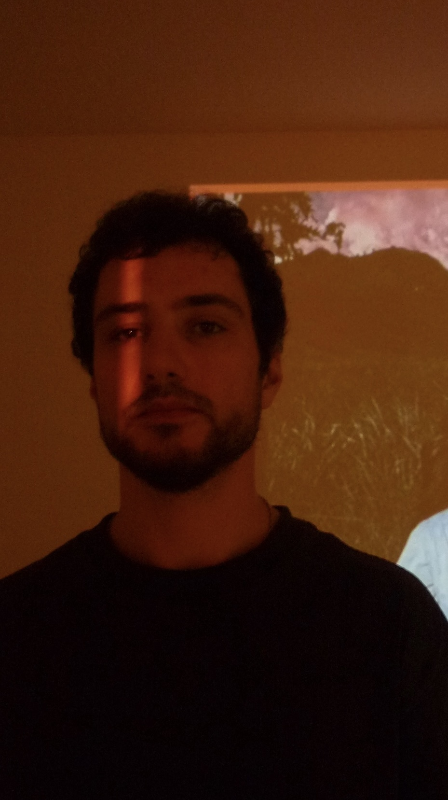

Pavel Maklyarovsky
video direction, creative direction, AI & shooting
education
- Higher School of Economics, mediaproduction in creative industries, 2015 graduate, Moscow
- Mitta Film School, practical light theory workshop, 2021, Moscow
- Mitta Film School, Director of Photography course, 2022, Moscow
- Institute of Visual Arts, Master of Visual Arts, 2024
- Tochki Camp, AI + Human course, 2026
- XR School, Creative AI course, 2026
Pavel Maklyarovsky is a visual artist, videographer and short video director. He works mainly with fashion brands, musicians and cultural projects. His work builds surreal, near-real, nostalgic worlds: dreamlike montage, anti-glossy imagery, blurred portraits, dissolved frames and optical distortions.
Pavel is also a researcher of post-traditional Caucasus culture, which surfaces throughout his video work. He created papahastories.ru, a media project on Caucasus culture, and continues this research as creative director at luminaryspace.com, an educational center in the mountains of Dagestan.